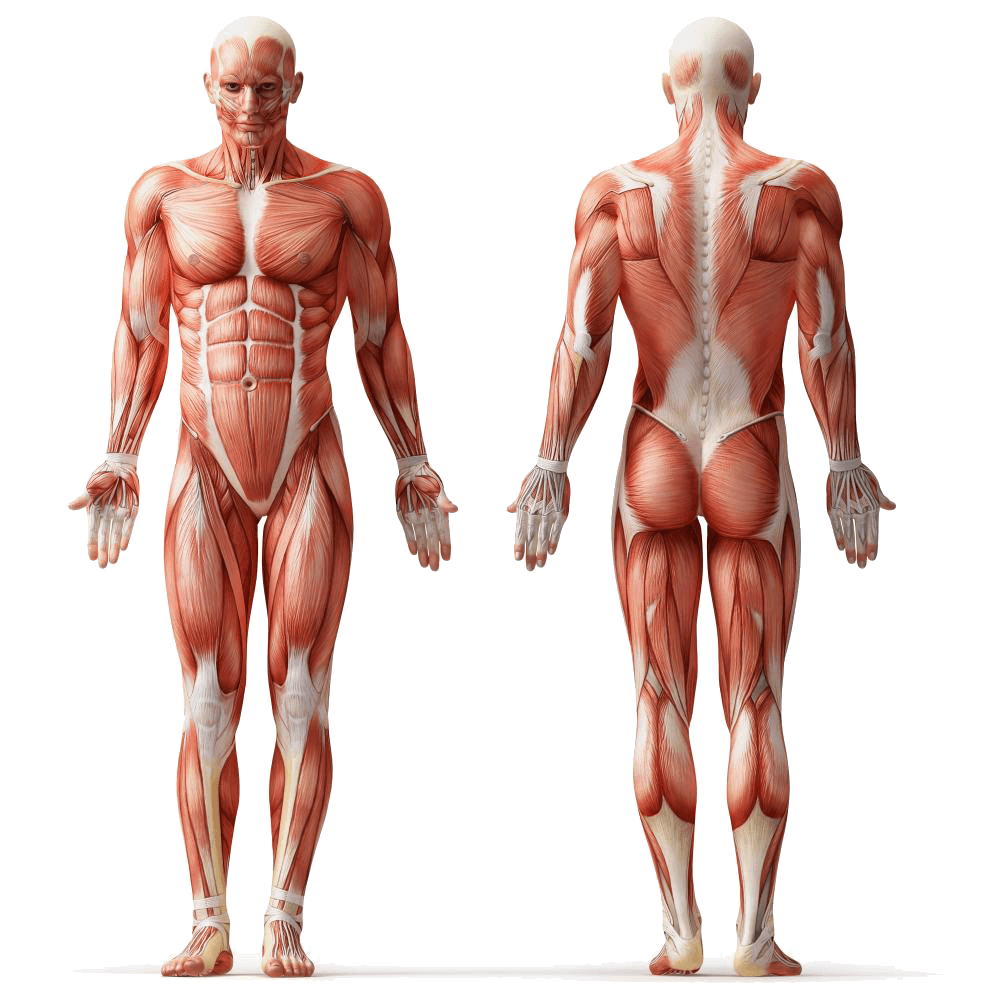

Quais são as características de um profissional da Educação Física?
A essência do trabalho de um profissional formado em Educação Física está no contato com outras pessoas. Para ser um bom profissional nesta área é fundamental ter paciência e inteligência emocional.
Ter uma boa comunicação também é uma característica importante para que o profissional consiga explicar com clareza e objetividade como os exercícios devem ser realizados, qual força utilizar e como respirar durante a prática das atividades.
Quais disciplinas vou estudar em Educação Física?
Fazem parte da estrutura curricular do curso matérias sobre Anatomia Humana, Fisiologia, Nutrição, Prevenção de Lesões e Primeiros Socorros.
Outras disciplinas são mais específicas da prática desta profissão, como por exemplo: Atletismo, Esportes Aquáticos, Desenvolvimento Motor, Dança, Ginástica e Esportes, entre outros.
Confira como é a grade curricular de uma faculdade em Educação Física:
Administração E Marketing Esportivo Anatomofisiologia Do Aparelho Neurolocomotor
Anatomofisiologia Do Corpo Humano Aprendizagem Motora E Psicomotricidade
Atenção Básica Em Saúde Aplicada À Educação Física Atividade Física Na Empresa
Atividades Alternativas E Meio Ambiente Atividades Complementares
Atividades Físicas Adaptadas Atividades Físicas Em Academias
Bases Da Atividade Física E Saúde Bioinformação E Tecnologias Digitais Para Educação Física
Bioquímica Aplicada À Saúde
Brincadeiras E E-Games
Cinesiologia E Biomecânica
Crescimento E Desenvolvimento Humano
Cultura Corporal Do Movimento
Estágio Em Educação Física Bacharelado
Expressão Corporal E Dança
Fisiologia Do Exercício E Bases Nutricionais
Fundamentos Da Iniciação Esportiva
Fundamentos Do Treinamento Esportivo
Fundamentos Dos Movimentos Básicos
Introdução À Biologia Celular E Do Desenvolvimento
Introdução À Educação Física
Introdução Aos Esportes
Lutas Na Educação Física
Medidas E Avaliação Em Educação Física
Metodologia Do Ensino De Esportes Aquáticos
Pensamento Científico
Práticas Esportivas
Prescrição Do Exercício Para Grupos Especiais
Primeiros Socorros
Psicologia Do Esporte E Do Exercício
Qualidade De Vida E Educação Física
Recreação E Lazer
Sociedade Brasileira E Cidadania
Trabalho De Conclusão De Curso
Treinamento Personalizado
Algumas faculdades também oferecem disciplinas focadas nos esportes mais populares em nosso país, como Futebol, Voleibol, Natação, entre outros.
Sobre as Faculdades!
As faculdades de Educação Física podem oferecer cursos em duas modalidades: licenciatura e bacharelado .
Na modalidade de licenciatura, o objetivo é formar professores de Educação Física para a Educação Infantil, Ensino Fundamental e Ensino Médio.
Já a modalidade de bacharelado, tem como objetivo formar profissionais que irão atuar na prescrição e controle de treinamentos e atividades físicas nas diversas modalidades desportivas e recreativas em instituições não escolares, como academias, hotéis e clubes.
Os estudantes do curso de Educação Física aprendem sobre a estrutura e funcionamento do organismo humano no que diz respeito aos movimentos corporais e sobre o crescimento e desenvolvimento do corpo humano em diversas etapas da vida. Também recebem noções de nutrição e primeiros socorros, além de aprenderem a prescrever exercícios físicos adequados para todos os tipos de pessoas.

Pós-graduação!
Educação Física ou Atividade Física Adaptada
Esse curso traz o estudo do exercício físico destinado às pessoas com deficiência e às mudanças ocorridas nessa área relacionando-as a novas necessidades educacionais. O aluno aprofunda seus conhecimentos sobre deficiência visual, auditiva, motora e intelectual a partir das diversas concepções, reconhecendo suas implicações teóricas e metodológicas para prescrição de exercício físico adaptado.
Personal Training - Metodologia do Treinamento Personalizado
O curso de Personal capacita o profissional de Educação física a prescrever exercício físico de maneira individualizada utilizando os meios e métodos do treinamento físico para pessoas de diferentes perfis, desde atletas a obesos ou pessoas com problemas de saúde.
Atividades Físicas para Grupos Especiais
Voltado para profissionais de Educação Física, Fisioterapia, Terapia Ocupacional e outras áreas da saúde, o curso difere do “Atividade Física Adaptada” porque, aqui, se estudam as doenças musculoesqueléticas e exercícios resistidos para os grupos especiais.
Educação Física com Ênfase em Treinamento Desportivo
A pós-graduação de Educação Física Desportiva (ou Esportiva) capacita os profissionais a lidar e treinar atletas e pessoas que praticam esportes, no geral. Ele é um educador da área e pode atuar tanto na esfera pública, quanto privada.
Basquetebol
Estuda o basquetebol, seus fundamentos, seu contexto sócio-histórico-econômico e desenvolve a capacidade do profissional em treinar seus alunos e repassar o conhecimento sobre o esporte, inclusive sobre testes e estratégias para, no caso de uma equipe, obter melhores resultados.
Bioquímica do Exercício
Tem como público-alvo graduados em Educação Física, Nutrição, Fisioterapia, Ciências Biológicas, Medicina e Medicina Veterinária. O aluno, neste curso, estuda o exercício pela visão científica, analisando o corpo humano e seu funcionamento e estruturas. Ele estudará o uso de nutrientes e a produção e consumo de energia durante os diferentes tipos de práticas esportivas.
Atletismo
Essa pós-graduação é voltada para alunos que queiram entender melhor e ensinar pessoas de diferentes faixa-etárias a respeito de esportes que se encaixam no atletismo, como corrida, corrida com obstáculos, salto, arremessos e lançamentos, entre outros.
Teoria e Prática do Exercício Físico Aplicado às Lesões e Doenças Musculoesqueléticas
O intuito desse curso é fornecer ao profissional da Educação Física e demais áreas da saúde uma melhor qualidade técnico-científica no planejamento, execução e gerenciamento de atividades físicas voltadas à prevenção e reabilitação de lesões e doenças musculoesqueléticas. Também estimula o desenvolvimento científico nesta área do conhecimento humano e a atuação profissional no ensino superior nesta área.
Fisiologia, Avaliação e Prescrição de Exercício Físico
Essa pós-graduação é voltada para a conscientização do profissional por meio de sua atuação técnico-pedagógica, o preparando para atuar com mais segurança e melhor padrão profissional, tanto no atendimento direto ao cliente, quanto em instituições de ensino, lecionando ou atuando na área de pesquisa.
Exercício e Controle do Peso Corporal
A atuação deste profissional é voltada para ações físicas destinadas a pessoas que estejam acima de seu peso ideal. Normalmente o trabalho do educador nesta área é realizado em conjunto com nutricionista ou nutrólogo.
Mercado de Trabalho!
De acordo com as novas Diretrizes Curriculares Nacionais para a Graduação em Educação Física (Resolução CNE/CES Nº 06, de 18 de dezembro de 2018), o estudante que concluir o curso será considerado um Graduado em Educação Física. A depender da escolha feita no 5º semestre do curso (quando o estudante escolhe se fará Bacharelado ou Licenciatura), seu diploma terá o registro de Bacharel em Educação Física, Licenciado em Educação Física ou ambos.
Quem optar pela Licenciatura, estará habilitado para trabalhar em diversas funções da área escolar, pública ou privada. São alguns exemplos de campos de atuação nessa área:
Professor ou Professora de Educação Física nas diferentes fases do ensino básico da educação nacional
Coordenador ou Coordenadora de Esportes
Coordenador Pedagógico ou Coordenadora Pedagógica
Vice-diretor ou Vice-diretora de Escola
Diretor ou Diretora de Escola
Já quem optar pela habilitação no Bacharelado, estará habilitado para atuar em diversos outros campos da profissão. Por exemplo:
Professor ou Professora de Educação Física, atuando na avaliação, prescrição e orientação de atividades físicas e esportivo (individuais ou coletivas) em diferentes locais e para diferentes perfis populacionais, como crianças, adolescentes e idosos, sejam eles pessoas com necessidades especiais ou não
Gerente, coordenador e supervisor de academias, centros esportivos e clubes
Organizar e atuar em programas de recreação e lazer em hotéis, clubes e cruzeiros marítimos
Planejar e promover políticas públicas em Educação Física, Esporte e Lazer
Prestar assessoria e gerenciamento esportivo